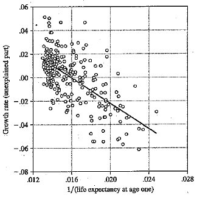
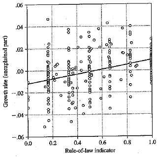
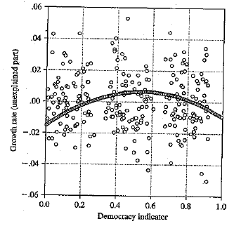
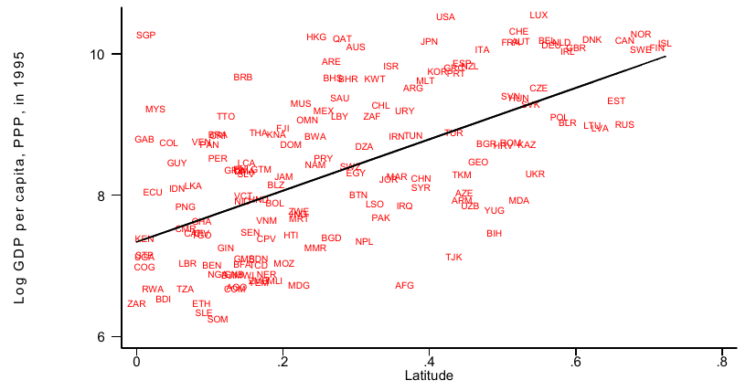
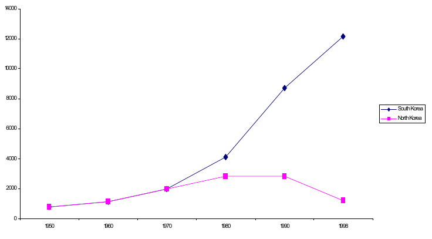
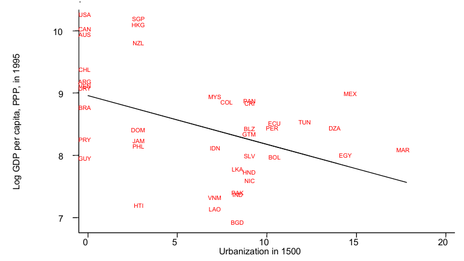
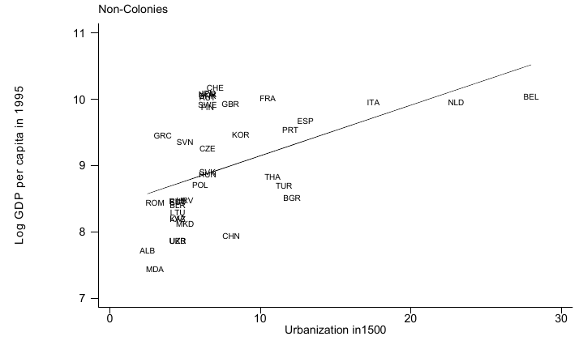
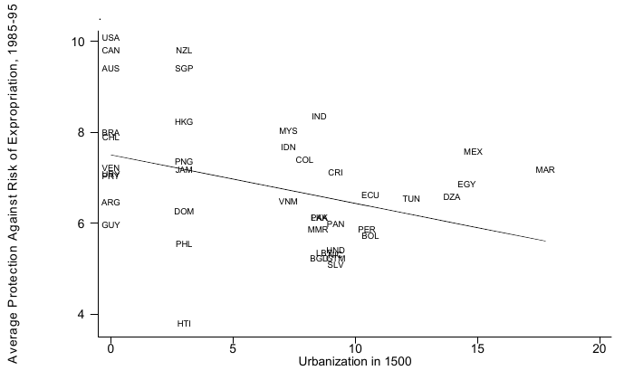
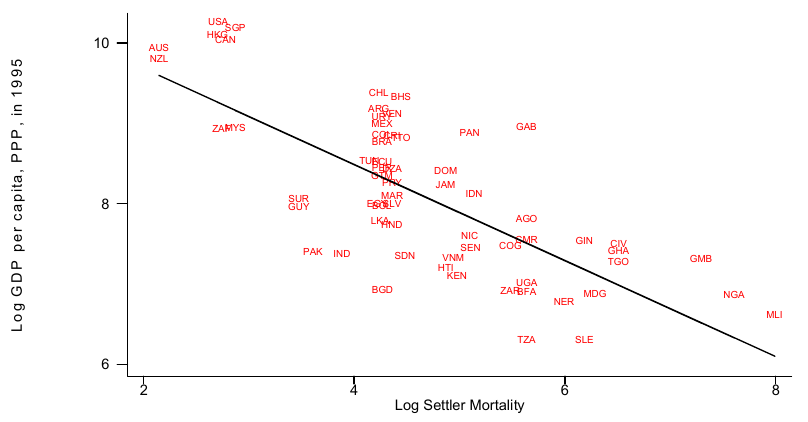

Economic Growth
ECON 499: Economics of Inequality
Winter 2018
Global inequality
- Most international inequality is between country, not within country
- Some countries/regions grow at different rates than others
- If poor countries grow slower than rich countries, global inequality will increase
- Rule of 70: Small changes in growth can have large consequences on the global distribution of income

Growth theory
- Why do countries grow? What determines their growth rate?
- Standard economic growth model: Solow-Swan model
- Growth is determined by factor accumulation and technology
- All else equal, countries will reach a steady state growth path, where they grow at a constant rate
Solow model
Setup:
- Output \(Y_t\) (GDP) is produced with capital \(K_t\)
- Assume constant labor (no population growth)
- Capital transformed into output by a production function
- \(Y_t = f(K_t)\), \(f''(K_t)<0\) (diminishing marginal returns)
- Existing capital depreciates at a rate \(\delta\) every period \(t\)
- Each period, output is either saved (as new capital) at rate \(s\) or consumed: \(Y_t = I_t + C_t = K_t + C_t\)
Capital accumulation
Convergence
- The steady-state level of capital is determined by the shape of the production function and the savings rate
- Countries with different production processes and different savings rates will have different steady-states
- This explains why we don't observe absolute convergence
Adding steady-state growth
- In the simple model there is no growth in the steady state
- Data suggests that most countries have positive growth in the steady state
- We might think that our production process \(f(K)\) gets better over time
- We can add an exogenous technology process \(A\) that increases productivity
- \(Y_t = A_tf(K_t)\)
Technological change
- Suppose \(A\) grows at some constant rate \(g\)
- Then at the steady state, \(Y\) is growing at the same rate
- \(Y_t = A_tf(\bar{K})\)
- \(\bar{K}\) constant, \(A\) grows at \(g\), \(\rightarrow\) \(Y\) grows at rate \(g\)
- Capital accumulation happens as before
- Long-run (steady-state) growth determined by technology growth
Poverty traps
- Suppose capital has diminishing marginal returns when it is abundant, increasing marginal returns when it is scarce
- Simple machines/tools less marginally productive than advanced machines/tools
- This can give rise to multiple steady-states
- Countries can get "stuck" at lower steady-state, unable to get to higher income level
Proximate causes
- In the simple model, steady states determined by technology, productivity, savings
- What determines these things?
- Are there other things that matter?
Human capital
- So far we've only considered physical capital (\(K\))
- The ability to efficiently use capital and technology a function of worker ability or skills (human capital)
- Countries with more human capital (education) have a higher steady state, will grow faster than countries with lower human capital from the same initial level of wealth
Other possibilities
- Rule of law
- Openness to trade
- Democracy
- Fertility rate
- Government spending
- Health





Fundamental causes of growth
- Many factors that correlate strongly with growth seem to be related
- There are likely some underlying factors that are causing everything
- If human capital creates growth, why don't all countries improve human capital? (Fertility, health outcomes, etc.)
- North and Thomas (1973):
The factors we have listed … are not causes of growth, they are growth
Fundamental causes?
- Luck
- Geography
- Culture
- Institutions
Luck
- Poverty trap model: Steady state income depends on initial level of capital
- What determines initial capital?
- Some countries may be lucky or unlucky
- Natural disasters can push countries to a low steady-state path early in development process
Arguments against luck
- It seems unlikely that the vast differences between the United States and Nigeria can be explained only by small, random occurrences
- Are we stuck with randomness?
- If yes, then there's nothing we can do about growth!
- If no, then why don't poor countries do something about it?
Geography
- Jared Diamond: Guns, Germs, and Steel (1997)
- Some climates more conducive to agriculture
- Tropical diseases
- Natural resources
- Strong correlation between latitude and wealth

Arguments against geography
- Countries diverge after industrialization, not during agricultural times
- Low agricultural prospects should create comparative advantage in industry
- Diseases are caused by wealth: Richer countries can afford to eliminate disease (black plague in Europe, malaria in US South)
Culture
- Max Weber: The Protestant Ethic and the Spirit of Capitalism (1905)
- Protestantism values hard work and capital
- Some cultures more trusting, harder working than others (?)
Arguments against culture?
- What is "culture"? How do we measure it?
- How do we account for similar cultures with vastly different growth/wealth? (North and South Korea, Nogales Sonora, Nogales Arizona)
Institutions
- New-institutional economics (Acemoglu, Johnson, Robinson: Why Nations Fail (2012))
- Douglass North (1990): "Institutions are the rules of the game in a society or, more formally, are the humanly devised constraints that shape human interaction."
- Institutions explain many facts that other explanations struggle with
- Extreme example: North and South Korea

Reversal of fortunes
- Many European colonies that were rich in 1500 are poor today
- Many that were poor in 1500 are rich today
- Opposite is true among non-colonies
- Difficult to explain by geography, luck, or culture


The reversal and institutions
- Institutions can explain the reversal of fortune among former colonies
- Colonies that are rich today have "better" institutions than colonies that are poor today

Colonies and institutions
- All colonies had an institutional change when thy were colonized
- Some colonies got "better" institutions than others
- What decides if a colony got better institutions?
- Note: "Better" in terms of economic growth only!

